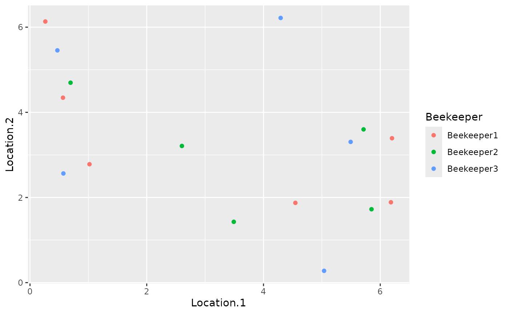

Crossing the queen is the most complicated action in SIMplyBee, since mating of honeybees is versatile. Virgin queens can be mated in a controlled manner, either using artificial insemination or a mating station, or uncontrolled in an open mating setting. In the latter case, the mating depends on the distance between the virgin queens and the drones or drone producing colonies.
In this vignette, we first explain five ways of mating virgin queens and at the end we describe two special cases of mating virgin queens on a mating station and mating multiple virgin queens in different ways.
Crossing decision tree
To facilitate the understanding of the crossing function and choosing the correct option for your need, we created a diagram with a decision tree following the questions:
Pop,
Colony, MultiColony class and males as a
single Pop class object.Pop, Colony, MultiColony
class and males as a list of Pop class object - one for
each virgin queen/colony.drones argument as a single Pop class
that represents the DCA with all the drones;droneColonies
argument as a MultiColony class with all drone producing
colonies. You probably want to use this option when you are simulating
an existing pedigree or trying to have more control over mating for a
larger number of queens, such as on a mating stations. You can also use
an auxiliary function createCrossPlan() to create the cross
plan, but in this case, you probably want to move to question 4.Pop, Colony,
MultiColony class and males either through the
drones argument as a Pop class object, or
through the droneColonies argument as a
MultiColony class object. You probably want to use this
option if you are not concerned with spatial simulation or are
simulation a small area with a single DCA. You can also use this option
to mate virgin queens on a mating station in combination with the
createMatingStationsDCA() function.MultiColony objects with the location set,
hence males have to be provided through the droneColonies
argument. You probably want to use this option when simulating realistic
breeding programs and populations.Start by loading the package:
library(package = "SIMplyBee")
#> Loading required package: AlphaSimR
#> Loading required package: R6
#>
#> Attaching package: 'SIMplyBee'
#> The following object is masked from 'package:base':
#>
#> split
library(package = "ggplot2")First, we create a founder population and some virgin queen and
virgin colonies for crossing. We will also create four
MultiColony objects that will represent colonies from four
different beekeepers.
# Simulate 40 founder genomes
founderGenomes <- quickHaplo(nInd = 60, nChr = 1, segSites = 100)
# Set global population paramaters
SP <- SimParamBee$new(founderGenomes)
# Create a base population of 40 virgin queens
basePop <- createVirginQueens(founderGenomes)
# Prepare populations with a single virgin queen
virginQueen1 <- basePop[1]
# Prepare populations with multiple virgin queens
virginQueens1 <- basePop[2:4]
# Prepare virgin MultiColony objects
beekeeper1 <- createMultiColony(basePop[6:11])
beekeeper2 <- createMultiColony(basePop[12:16])
beekeeper3 <- createMultiColony(basePop[17:21])
beekeeper4 <- createMultiColony(basePop[22:31])
beekeeper5 <- createMultiColony(basePop[32:40])
beekeeper6 <- createMultiColony(basePop[41:50])
beekeeper7 <- createMultiColony(basePop[51:60]) We will now create a groups of drones from the remaining queens with 1,000 drones per queen that will represent a drone congregation area (DCA).
# Create a DCA from the remaining virgin queens
DCA <- createDrones(basePop[42:50], nInd = 1000)We start by crossing a single virgin queen that can be provided
either in a Pop, Colony, or
MultiColony objects. In this case, you just need to provide
a Pop of drones she will mate with. Note that no sampling
is applied to the drones! Hence, if you provide a Pop with
100 drones, she will be mated to 100 drones!
# Samples some drone for mating from the DCA
drones <- selectInd(DCA, nInd = 10, use = "rand")
# Mate the virgin queen with the drones
queen1 <- cross(x = virginQueen1, drones = drones)
# Check the number of fathers for the queen
nFathers(queen1)
#> [1] 10The above code shows an example for mating the virgin queen in a
Pop object, but exact same holds for Colony
and MultiColony objects with a single queen.
We continue by crossing our virgin females to drone packages, that is
a pre-selected populations of drones. We recommend this option when
mating a larger number of queens, although it could be used for mating a
single virgin queen/colony as well, and when you want more control over
the drone selection. We pre-select the groups by pulling a desired
number of drone packages from a DCA with the function
pullDroneGroupsFromDCA(). This function requires you to
specify a group of drones (DCA), how many groups you want
to pull from the DCA (n), and how many drones per group you
want (nDrones). For nDrones, you can either
specify an integer or a sampling function, which results in a different
number of drones in each of the pulled groups (you can read more about
this in the Sampling functions vignette). These sampling functions are
particularly useful in crossing simulations:
nFathersPoisson(): samples the number of drones from a
Poisson distribution with a default mean of 15 (the user can specify a
different mean) - the output can contain the value 0 andnFathersTruncPoisson(): samples the number of drones
from a zero truncated Poisson distribution with a default mean of 15
(the user can specif a different mean) - the output does not contain the
value 0.If these functions do not satisfy your needs, you can specify your own sampling function(s).
We can pull the drone groups out separately for each crossing or pull them out all at once.
# Pre-select drone (father) populations from a DCA
droneGroups <- pullDroneGroupsFromDCA(DCA, n = 20, nDrones = nFathersTruncPoisson)There is a different number of drones in each group because we used a sampling function:
sapply(droneGroups, FUN = nInd)
#> [1] 13 21 14 12 22 19 13 12 15 10 11 17 14 18 16 12 12 11 9 14Now, we can cross our virgin queens to drone groups.
When mating a large number of queens, creating drone populations can
be computationally demanding! A better option is to cross according to a
cross plan that includes all the females and the males that they will
mate with, and males as a single object. The cross plan is a list whose
names are the IDs of either the virgin queens or the colonies you want
to cross (but not both in the same cross plan!), and the content for
each queen is either the IDs of drone or drone producing colonies she
will mate with (again, use either only drone or only drone producing
colony’s IDs in one cross plan!). When providing drone IDs, you also
have to provide the males through the drones argument as a
single Pop class that represents the DCA with all the
drones. The DCA can represent a DCA of randomly assembled drones in the
vicinity, a ‘global’ DCA of all drones available at a time, or a DCA at
a mating station. If you are providing drone producing colonies’ IDs,
you need to provide the males through the droneColonies
argument as a single MultiColony class. Mating with drone
producing colonies might be computationally more efficient since only
the drones needed for mating are created on the spot.
You can use the cross plan either to gain more control over mating
and create the cross plan in a manual manner, or to simply reduce the
computational burden when mating a large number of virgin queens. For
that, you can either use the function createCrossPlan(), if
you want to inspect the cross plan before deployment, or simply let the
cross() function to create the cross plan internally (see
options 5 and 6). The latter is just a shortcut since it calls the
createCrossPlan() function from within the
cross(). Both option hence allow to create the cross plan
by randomly sampling available drones or drone producing queens, or
sample them according to their geographical proximity to the virgin
colony. Do note that to perform spatial sampling, the females and males
have to be provided and MultiColony objects with a set
location. Another situation where you would want to use the cross plan
is when you want.
NOTE: You can create one cross plan for a number of virgin queens or colonies and then mate each one separately. Let’s say you have 100 colonies from two beekeepers. You can create a cross plan for all of them in one go, and then mate colonies from each beekeeper separately by providing the same cross plan. Do note again, that one cross plan can either contain only virgin queen or only virgin colonies’ IDs, no mix and and match!
Let us now create a random cross plan with drone IDs to mate the virgin colonies from one of the beekeepers.
crossPlan1 <- createCrossPlan(x = beekeeper2,
drones = DCA,
nDrones = nFathersPoisson)
# Inspect the cross plan
crossPlan1
#> $`7`
#> [1] "3562" "5763" "2569" "6673" "7580" "8574" "5817" "390" "7629" "8133"
#> [11] "334" "1441" "1055" "5176" "3639"
#>
#> $`8`
#> [1] "7122" "4535" "2759" "3281" "2678" "2590" "6011" "9008" "5362" "7341"
#> [11] "2956" "5344" "2552" "2020" "3389" "5701" "1741" "8369"
#>
#> $`9`
#> [1] "8654" "5691" "1064" "7746" "5752" "7887" "2870" "3083" "2166" "7164"
#> [11] "7822" "7336" "1345" "8490" "5806" "6021"
#>
#> $`10`
#> [1] "1451" "3010" "7747" "7872" "2116" "7864" "3013" "1740" "649" "6991"
#> [11] "2714" "4953"
#>
#> $`11`
#> [1] "8453" "574" "6785" "2213" "5983" "2208" "7905" "8910" "4606" "542"
#> [11] "6267" "4894" "2793" "3705" "3323" "2761" "5007" "1473" "2933" "570"
#> [21] "1492"
sapply(crossPlan1, length)
#> 7 8 9 10 11
#> 15 18 16 12 21We see that the cross plan is a list, with names being colony IDs and
elements of the list being the ID of drones that each virgin colony will
mate with. Now, we can cross the colonies of each beekeeper by providing
the crossPlan1 to the cross() function and the
created DCA through the drones argument.
# Cross the colonies of the beekeeper 2
beekeeper2 <- cross(x = beekeeper2, drones = DCA, crossPlan = crossPlan1)
nFathers(beekeeper2)
#> 7 8 9 10 11
#> 15 18 16 12 21Now, let us now create a spatial cross plan, this time by sampling
drone producing colonies that will provide drones to mate with another
one of our virgin apiaries. We will mate colonies of beekeeper 3. In
this examples, colonies from beekeeper 1 and beekeeper 2 will serve as
drone producing colonies. Although we are not sampling drones directly,
you still need to provide nDrones argument to determine the
number of sampled drone producing colonies.
For spatial mating, we need to set the location to our apiaries (all the colonies within an beekeeper will have the same location). Here, we are setting this locations randomly, but these could be actual coordinated of colonies within a country.
# Set location to apiaries
beekeeper1 <- setLocation(beekeeper1,
location = Map(c, runif(nColonies(beekeeper1), 0, 2*pi), runif(nColonies(beekeeper1), 0, 2*pi)))
beekeeper2 <- setLocation(beekeeper2,
location = Map(c, runif(nColonies(beekeeper2), 0, 2*pi), runif(nColonies(beekeeper2), 0, 2*pi)))
beekeeper3 <- setLocation(beekeeper3,
location = Map(c, runif(nColonies(beekeeper2), 0, 2*pi), runif(nColonies(beekeeper3), 0, 2*pi)))We can plot the location of colonies to see how they arrange in space. Again, we want to mate the virgin queens of beekeeper 3 with drone produced by colonies of beekeepers 1 and 2.
locationsDF <- data.frame(Location = getLocation(c(beekeeper1, beekeeper2, beekeeper3), collapse = TRUE),
Beekeeper = c(rep("Beekeeper1", nColonies(beekeeper1)),
rep("Beekeeper2", nColonies(beekeeper2)),
rep("Beekeeper3", nColonies(beekeeper3))))
ggplot(data = locationsDF, aes(x = Location.1, y = Location.2, colour = Beekeeper)) +
geom_point()
Next, we create a spatial cross plan for mating our colonies. We set the radius to however far we believe our drone can fly according to the scale of locations coordinates. All the drones within that area then have the same probability of mating with the queen, which follows the believe that drones aggregate in a DCA.
crossPlan2 <- createCrossPlan(x = beekeeper3,
droneColonies = c(beekeeper1, beekeeper2),
spatial = TRUE,
radius = 3,
nDrones = 13)
# Inspect the cross plan
crossPlan2
#> $`12`
#> [1] "8" "1" "3" "11" "5"
#>
#> $`13`
#> [1] "5" "1" "11" "8" "2" "3" "7"
#>
#> $`14`
#> [1] "7" "6" "3"
#>
#> $`15`
#> [1] "8" "1" "11" "5" "3"
#>
#> $`16`
#> [1] "7" "3" "1" "8" "5" "6"
sapply(crossPlan2, length)
#> 12 13 14 15 16
#> 5 7 3 5 6We see that there is a different number of drone producing queen for each virgin queen in the specified radius . It could also happen, there are no drone producing colonies in that radius. In that case, you can either increase the radius, if you think that is sensible, or some virgin queens will remain unmated. Once we have the spatial cross plan, we can mate our colonies.
beekeeper3 <- cross(x = beekeeper3,
crossPlan = crossPlan2,
droneColonies = c(beekeeper1, beekeeper2),
nDrones = 13)
# Inspect the number of fathers
nFathers(beekeeper3)
#> 12 13 14 15 16
#> 13 13 13 13 13As you see, we have duplicated quite some information in running first a function that creates a cross plan and then performing the crossing. If you are not really keen on inspecting the cross plan before mating, we suggest you use the options 4 and 5 (see below).
You may also want to provide an existing cross plan if you want to create more tailored cross plans and cross virgin queens with different methods (i.e. you want to mate one queen in the apiary in an artificial insemination, some of them would be open mated etc.). For that, see the section “Special cases” at the end of this vignette.
The procedure behind this option is exactly the same as described in
option 4 with using createCrossPlan() function to create
either a random and spatial cross plan and then crossing according to
the plan. The difference is that in this option, the two steps are
combined within the cross() function.
Let us mate the colonies of the remaining beekeepers 4 and 5 with colonies of beekeepers 1 to 3 as drone producing colonies. Let’s first set the locations of the beekeepers 4 and 5 colonies.
beekeeper4 <- setLocation(beekeeper4,
location = Map(c, runif(nColonies(beekeeper4), 0, 2*pi), runif(nColonies(beekeeper4), 0, 2*pi)))
beekeeper5 <- setLocation(beekeeper5,
location = Map(c, runif(nColonies(beekeeper5), 0, 2*pi), runif(nColonies(beekeeper5), 0, 2*pi)))Now, we will mate the colonies of beekeeper 4 in a random manner and
colonies of beekeeper 5 in a spatial manner, all within the
cross() function. For this, you have to pass a keyword
“create” to the crossPlan argument in the
cross().
beekeeper4 <- cross(x = beekeeper4,
droneColonies = c(beekeeper1, beekeeper2, beekeeper3),
crossPlan = "create",
spatial = FALSE,
nDrones = 12)
#> [1] "Cross plan, drone colonies"
nFathers(beekeeper4)
#> 17 18 19 20 21 22 23 24 25 26
#> 12 12 12 12 12 12 12 12 12 12
beekeeper5 <- cross(x = beekeeper5,
droneColonies = c(beekeeper1, beekeeper2, beekeeper3),
crossPlan = "create",
spatial = TRUE,
radius = 3,
nDrones = 12)
nFathers(beekeeper5)
#> 27 28 29 30 31 32 33 34 35
#> 12 12 12 12 12 12 12 12 12Mating virgin queens at a mating station is no different than mating them at an open DCA - the difference is in the DCA itself. In the case of open mating, the DCA consists of drones from multiple queens, all of which are usually unknown. In the case of a mating station, the DCA consists of drones coming from a sister group of drone producing queens (DPQ), the queen of which is known. This allows us to track the pedigree on the paternal side.
To simulate this, you can either: * create a group of sister queens
and provide them to the cross() function through the
droneColonies argument; * create a mating stations DCA and
then either pull drone packages from it, create a random plan from it,
or provide it directly to the cross() function through the
drones argument.
Here, we will demonstrate one of the options. We will create a mating
station DCA using createMatingStationDCA() function, which
takes a single “sire” colony (queen of the DPQs). From the “sire”
colony, the function first produces a desired number of sister DPQs, and
next produces a desired number of drones per DPQ. The produced drones
represent the mating station’s DCA.
# Create a DCA at a mating station from colony1
(matingStationDCA <- createMatingStationDCA(beekeeper1[[3]], nDPQs = 20, nDronePerDPQ = 1000))
#> An object of class "Pop"
#> Ploidy: 2
#> Individuals: 20000
#> Chromosomes: 1
#> Loci: 100
#> Traits: 0We see that the output of the function is a single population of
20,000 drones that represents the DCA. As mentioned, once you have the
DCA, you can use it in different manners. Here, we will feed it directly
to the cross() function and assume random sampling of
drones. Spatial sampling does not make sense here, since all the drones
and the virgin colonies are at the same location - the mating
station.
It could happen that you have some virgin colonies in an apiary and you want to inseminate one of the virgin queens artificially with a single drone, take three of them to a mating station, and mate the rest of them openly at a local DCA. Since the cross plan is a named list, you can concatenate multiple cross plans into one. Let’s mate the multicolony of beekeeper 4 in such a manner.
# Create a single drone for single drone insemination
singleDrone = createDrones(beekeeper1[[1]], nInd = 1)
# Create a cross plan for crossing some of the colonies in an open DCA,
# some with single drone, and some on a mating station
crossPlanBeekeeper7 <- c(
createCrossPlan(x = beekeeper7[1],
drones = singleDrone,
nDrones = 1),
createCrossPlan(x = beekeeper7[2:6],
drones = DCA,
nDrones = nFathersTruncPoisson),
createCrossPlan(x = beekeeper7[7:10],
drones = matingStationDCA,
nDrones = nFathersTruncPoisson)
)
beekeeper7 <- cross(x = beekeeper7,
crossPlan = crossPlanBeekeeper7,
drones = c(singleDrone, DCA, matingStationDCA))
nFathers(beekeeper7)
#> 46 47 48 49 50 51 52 53 54 55
#> 1 12 18 20 12 11 12 11 7 18